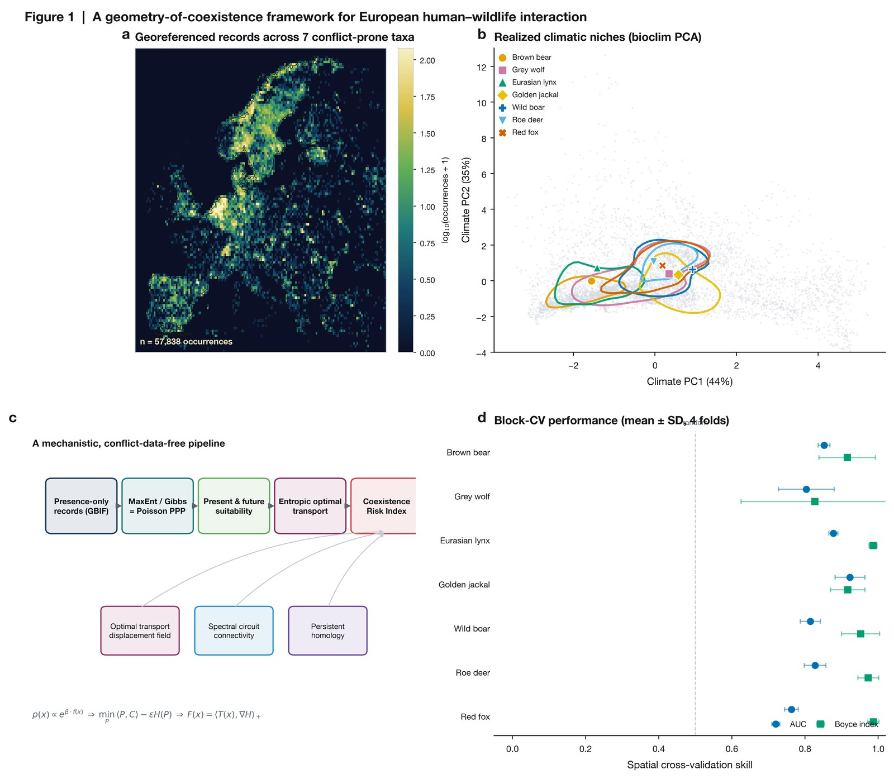

A foundation built on habitat models we trust
To understand where species may move in the future, we first needed to understand where they can live today. Using 57,838 GBIF observations, we built habitat models for seven European mammal species, using a maximum entropy approach implemented through its mathematically equivalent penalized Poisson point process formulation, and used them to map suitable habitat under both present and future climates.

Figure 1a - Georeferenced Records
We utilize open-access GBIF sightings of seven mammal species across Europe. Because this is "presence-only" data (we know where species were spotted, but not where they weren't), we use specialized Poisson point process models designed to handle this inherent ecological bias.
Figure 1b – Climatic Niches
To map each species' environmental comfort zone, we condensed dozens of complex climate variables into two Principal Components (PCs) that capture nearly 80% of Europe's climatic variation. This visually separates highly adaptable climate generalists from climate specialists.
Figure 1c – Mechanistic Pipeline
This flowchart traces our entire modeling journey. By feeding raw occurrences and climate niches into physical movement algorithms, we generate our final Coexistence Risk Index without ever using historical conflict data for training—ensuring our predictions are truly mechanistic.
Figure 1d – Model Skill
Rather than using standard random validation-which can artificially inflate accuracy due to nearby, similar locations-we implemented strict spatial cross-validation. By hiding entire geographic blocks during testing, we prove our model's real-world predictive power.
Interactive · realized climatic niches
hover a niche · click a chip to isolateInteractive · model skill
hover a marker for exact valuesAUC (does a true site outrank a random one?) and the presence-only Boyce index. TSS is not fit for MaxENT and its presence-only data as specificity can not be accurately calculated without true absence data.
Present & future species distributions
The habitat maps MaxEnt hands to the rest of the pipeline. Drag the divider to wipe between today and 2090; hover to read the suitability; switch species below.
Interactive · habitat today ↔ 2090
drag divider · hover mapHover the map to read habitat suitability.